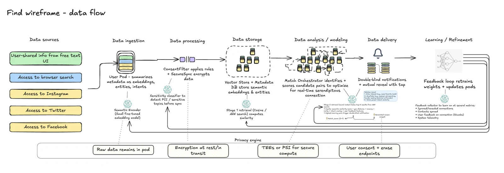
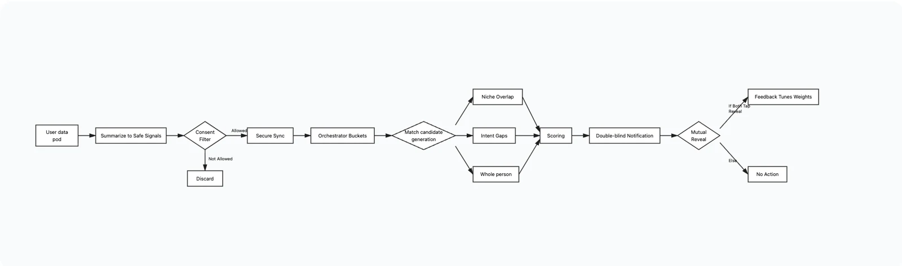

Find: a serendipity engine
Concept for a new way to connect, using latent interest graph matches in real-time, in precise locations.
Tech Notes
Built with: React, TypeScript, Postgres, OpenAI API
Code: GitHub
Custom domain: findproject.org
Version: Beta v0.1
The Problem
Social platforms optimize for engagement, not for users. You trade your data for connectivity, algorithms maximize screen time, and the whole model keeps you online instead of present. It rewards conformity over taste.
But there's enough data to flip this. The problem lives in incentive structures, not technical implementation. Enter Find.
Introduction to Find
Find is a private, self-building personal interest graph. The product makes you more aware of yourself and the people around you. It makes chance discovery possible in a way it wasn't before. It does two things:
First, it builds a map of your own interests pulled from your behavior across platforms, visible to you, and owned by you. It is a digital self-mirror you control.
Second, it finds patterns between people. It maintains a shared semantic layer so it can notice overlaps without exposing raw data. It works in real-time to foster location-based serendipity while data stays private.
Why Now?
Frontier AI and compute scale finally make real-time, location-aware matching possible. Cultural fatigue with social media is also peaking. Half of teens say it's harmful, and half of all users say they spend too much time online. And, flat screen interfaces are sunsetting. Find is built for a world where interfaces are spatial and embedded in the physical world. It operates in the background, is anti-interface, and facilitates real encounters instead of competing for attention on a feed.
Looking Ahead
Find is a prototype for a healthier information economy. If it works, it proves and prices the value of personal data to individual users. The long-term vision: Find is the first of many products evoke wonder.
Process and Implementation detail
Find is currently available for beta testing and will be built out with more core infrastructure over the next several months. I started with a data architecture sketch, a user behavior flow, and a rapid prototype using my own interest graph data:
Data architecture wireframe:
match_score = α·(semantic_similarity) + β·(rarity_of_overlap) + γ·(geo_proximity) + δ·(recency) + ε·(serendipity_bonus)
The architecture was designed around privacy-by-design constraints. User data remains inside individual pods and is reduced to anonymized embeddings before syncing. The main tradeoff was balancing semantic richness with privacy guarantees.
User flow sketch:
I began with a system-first flow that models how consent, filtering, and orchestration happen before any user interaction. The key design decision was to keep matching double-blind and fully consent-based, ensuring users experience discovery as agency, not exposure.
Views from the prototype:
Next Steps
Test traction and user response:
Refine core infrastructure by integrating the SOLID protocol and securing multi-party computation for on-device matching and user data control
Simulate scale with synthetic user behavior data to model any emergent behavior / test for bias in the match-scoring algorithm (pre-beta)
Run a small-scale campus prototype with 100 users (free signup, weekly feedback) for 4 months
Publish findings and design learnings and plan for second prototype or scale

